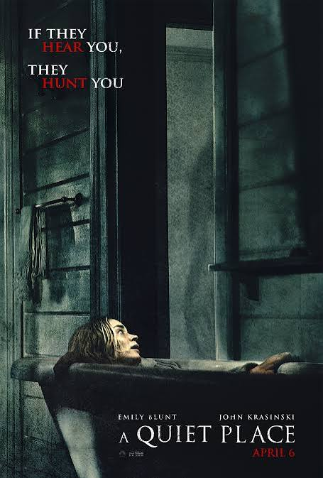

Ricardo Godoy
Edad: 19 años
Cédula: 8-1076-1357
Soy Ricardo Godoy, estudiante de 2do año de la licenciatura en Desarrollo y gestión de software, me interesa mucho lo que es el mundo tecnologico en general ya que siento que cada vez está involucrado en todos los ambitos de nuestra vida, me gusta hablar con mis amigos, jugar fut, la comida de mi mamá.

A Quiet Place
Categoría: Película
Escogí A Quiet Place porque me atrapó desde el inicio con todo el suspenso. Me mantuvo súper entretenido esperando cada escena para ver qué iba a pasar. La idea de tener que vivir en silencio me pareció muy buena y diferente. Es de esas películas que no te dejan despegarte de la pantalla.